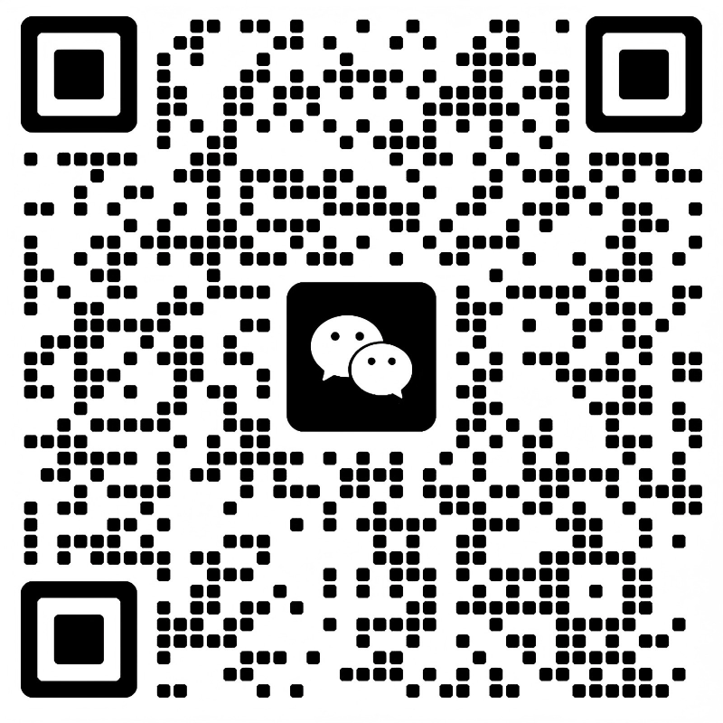

我出生在苏北农村，后来在南京扎根。一路走来，做过网站开发、教育软件，也在创业公司里摸爬滚打过。对我来说，技术不是炫技的标签，而是让生活与工作更省力、更有秩序的工具。
我性格偏安静，不太擅长喧哗式表达，但心里一直有一股想把事情做成的劲。尤其是写代码的时候，常常会忘记时间——那种专注感，让我始终愿意继续向前。
关于我
我出生在苏北农村，后来在南京扎根。一路走来，做过网站开发、教育软件，也在创业公司里摸爬滚打过。对我来说，技术不是炫技的标签，而是让生活与工作更省力、更有秩序的工具。
我性格偏安静，不太擅长喧哗式表达，但心里一直有一股想把事情做成的劲。尤其是写代码的时候，常常会忘记时间——那种专注感，让我始终愿意继续向前。
我更想成为那种让人觉得可靠的人： 说得不多，但交付出来的东西， 能看见时间、经验和诚意。
经历
早期做过工厂与服务类工作，也是在那段时间里，通过网吧自学编程，慢慢找到了真正愿意长期投入的事情。
经历过网站开发、站群建设、创业型互联网项目，也在教育软件方向沉淀了较长时间，逐步形成稳定的工程与交付能力。
近年持续深耕自动化与 AI 应用，把注意力放在智能体、工作流、效率工具与真实场景落地上，关注“能不能用起来”，而不只是“看起来很新”。
正在做的事
把 AI 变成能在真实工作中承担任务的助手，而不是只停留在演示阶段。
用自动化替代重复劳动，让流程更稳定，也让个人和团队腾出更多精力做关键判断。
围绕 AI 工具测评、教程、应用方法和轻量产品，持续探索普通人如何真正把 AI 用起来。
做事方式
我习惯先把问题想清楚，再动手做事。慢一点没关系，但要稳。
不喜欢靠夸张包装制造存在感，更愿意把心力放在真正有用的部分。
即使在最难的时候，也一直相信：只要持续做对的事，时间会给出答案。
联系与合作
可交流的方向
公开身份
公众号 / 视频号：南熙军AI探索
Coze：南熙军AI智能体
适合一起讨论真实业务场景、实用工具与长期内容建设。
如果你也在探索 AI 落地、自动化流程或实用产品，欢迎通过微信找到我。
微信联系
关于 AI 落地、自动化、内容方向或合作交流，都可以加我微信，慢慢聊。
